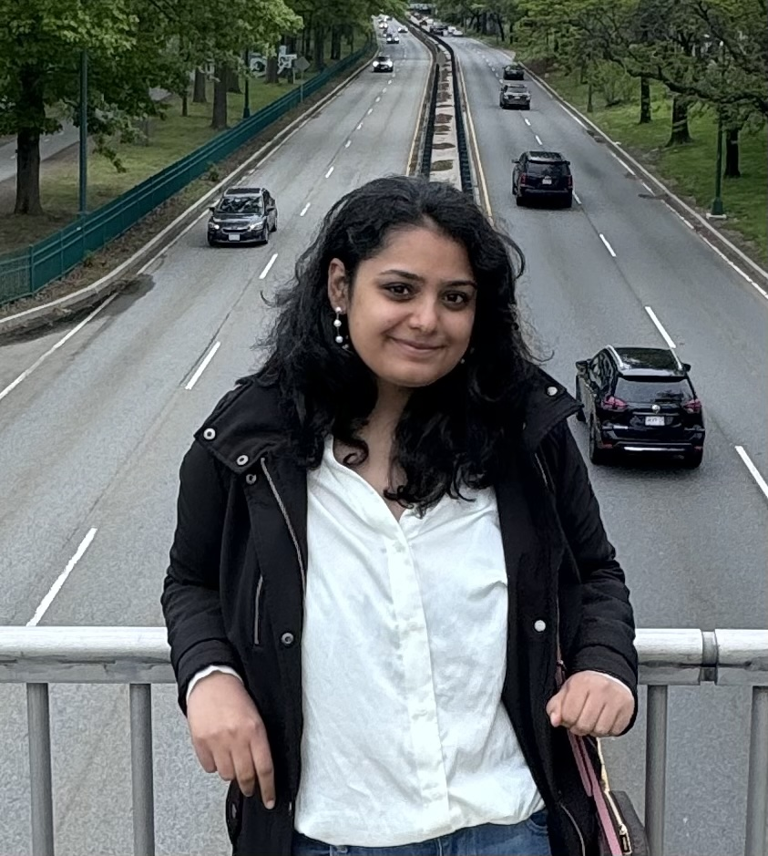

|
Hi! I am Lakshita, a third year PhD student at Brown University where I am advised by Prof. Stefanie Tellex and also work with Prof. George Konidaris. Currently, I am interning at the Robotics and AI Institute working on improving IL policies for robot manipulation using RL. I am interested in developing sample-efficient reinforcement learning methods, with a focus on uncertainty quantification and human-in-the-loop learning. Previously, I completed my Master's in Computer Science at Georgia Tech with a specialisation in Computational Perception and Robotics where I worked in the CORE Robotics Lab advised by Prof. Matthew Gombolay. During my Master’s I worked on Human-Robot Interaction specifically on distilling strategic intent of users from unstructured natural language commands and designing user centric strategy recommendation systems for Human-AI tasks. I have also worked as Software Development Engineer at Amazon in the Prime Verification Team. I did my undergrad studies from NIT Kurukshetra, India where I worked with Prof. Mayank Dave on Digital Image Watermarking and Wireless Networks. Email / CV / Linkedin / Google Scholar / Github / Twitter / Goodreads |
 |
|
Accelerating Residual Reinforcement Learning with Uncertainty Estimation
Lakshita Dodeja, Karl Schmeckpeper, Shivam Vats, Thomas Weng, Mingxi Jia, George Konidaris and Stefanie Tellex. In Robotics and Automation Letters (RA-L), 2025
|
|
 |
Towards the design of user-centric strategy recommendation systems for collaborative Human–AI tasks
Lakshita Dodeja*, Pradyumna Tambwekar*, Erin Hedlund-Botti, and Matthew Gombolay. In International Journal of Human Computer-Studies (IJHCS), 2024 Full Paper |

|
A Computational Interface to Translate Strategic Intent from Unstructured Language in a Low-Data Setting
Pradyumna Tambwekar, Lakshita Dodeja, Nathan Vaska, Wei Xu, Matthew Gombolay. In Empirical Methods in Natural Language Processing (EMNLP), 2023 Full Paper |
|
Hybrid color image watermarking algorithm based on DSWT-DCT-SVD and Arnold transform
Palak Garg, Lakshita Dodeja, Priyanka, Mayank Dave. In Springer Link : Advances in Signal Processing and Communication Full Paper |
|
Robotics and AI Institute
Reseach Intern, Sept'25 - present Working with Thomas Weng and Karl Schmeckpeper |
|
|
|
Brown University
PhD in Computer Science, Aug'23 - present Adviced by Prof Stefanie Tellex, GPA : 4/4 Graduate Researcher, Humans to Robots Lab, Aug'23 - Present |
|
|
Georgia Institute of Technology
Masters in Computer Science, Aug'21 - May'23 Specialising in Computational Perception and Robotics, GPA : 4/4 Graduate Researcher, CORE Robotics Lab, Aug'21 - Aug'23 Graduate Teaching Assistant, Robot Intelligence Planning, Jan'22 - May'22 |
|
Amazon Development Center
Software Development Engineer II, June'18 - July'21 Software Development Intern, May'17- Aug'17 Worked in the Amazon Prime Verifiacation Team. |
|

|
National Insitute of Technology, Kurukshetra
Bachelors in Computer Science, Aug'14 - May'18 Graduated as one of the top 10 students in the department, GPA : 9.35/10 Undergraduate Researcher with Dr Mayank Dave on Networks and Security |